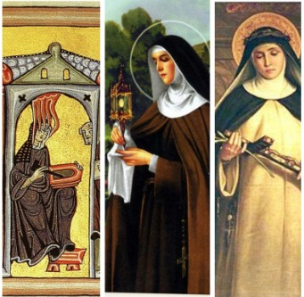

Muitas mulheres, enclausuradas em conventos e mosteiros da Europa medieval ou ligadas a ordens religiosas, transformaram e construíram espaços significativos dentro de seus contextos históricos. Esses enclausuramentos foram fundamentais para que muitas mulheres tivessem acesso à cultura livresca. Os conventos se tornaram, para elas, locais de relativa liberdade em uma sociedade patriarcal, onde os votos muitas vezes serviam para proteger interesses patrimoniais das famílias mais do que para a existência de autênticas vocações devotas.
Neste contexto, analisaremos as biografias de três mulheres que, vivendo no período medieval, utilizaram os conventos como espaços para o crescimento filosófico e espiritual, além de se dedicarem a estudos e observações variadas. São elas: Hildegarda de Bingen, Clara de Assis e Catarina de Sena.

Da esquerda para direita: ícones e pinturas de Hildegarda de Bigen, Clara de Assis e Catarina de Siena
Hildegarda de Bingen (1098-1179) foi uma mística, filósofa espiritual e polímata alemã cujas visões celestiais resultaram em uma vasta produção que integra teologia, música e medicina natural. Sua filosofia espiritual estava profundamente enraizada na crença de que o divino permeia toda a criação, sendo a natureza uma manifestação direta da vontade de Deus. Essa visão holística também guiou seus escritos sobre medicina natural, onde ela combinava conhecimentos tradicionais com suas próprias observações para criar um sistema terapêutico que visava a harmonia entre corpo, mente e espírito. Hildegarda via o ser humano como uma parte integral do cosmos, e sua filosofia espiritual enfatizava a interconexão entre o corpo humano e a criação divina, com a saúde dependendo da harmonia entre esses elementos.
Clara de Assis (1194-1253), nascida em uma família nobre de Assis, Itália, desde jovem demonstrou grande inclinação para seguir a vida religiosa. Inspirada pelos ensinamentos de Francisco de Assis, a quem conheceu pessoalmente, abandonou sua casa aos 18 anos para seguir um caminho espiritual mais radical. Enfrentando oposição familiar, fundou o ramo feminino da Ordem Franciscana, conhecido como Damas Pobres ou Clarissas. Viveu uma vida de extrema pobreza e dedicação à caridade. Através de seus conselhos e cartas, Clara inspirou muitas mulheres a seguir o ideal franciscano, deixando como legado uma filosofia simples e profunda sobre a pobreza.
Catarina de Sena (1347-1380) foi uma mística e teóloga italiana cujas ideias e escritos tiveram um impacto significativo na teologia e na filosofia medieval. Sua obra, especialmente "O Diálogo", reflete uma visão profunda sobre moralidade, penitência e a relação entre o indivíduo e a autoridade divina. Catarina é conhecida por suas visões e experiências espirituais, mas seu trabalho também aborda questões práticas e sociais, como a necessidade de reformas na Igreja e a promoção de valores cristãos em uma época de crise e corrupção. Sua influência transcendeu seu tempo, contribuindo para debates teológicos e filosóficos na Itália e além.
Em conclusão, os conventos e mosteiros da Europa medieval foram muito mais do que simples locais de reclusão. Eles se tornaram importantes centros de aprendizado e desenvolvimento pessoal para muitas mulheres. Hildegarda de Bingen usou sua experiência espiritual e conhecimentos do mundo natural para criar uma combinação única de teologia e medicina. Clara de Assis fundou uma ordem religiosa dedicada à pobreza e à simplicidade, inspirando muitas pessoas com sua devoção. Catarina de Sena, por sua vez, abordou questões importantes sobre a necessidade de reformas na Igreja. Essas mulheres mostram que, apesar das limitações de sua época, os conventos foram espaços onde elas puderam crescer intelectualmente e influenciar a história.